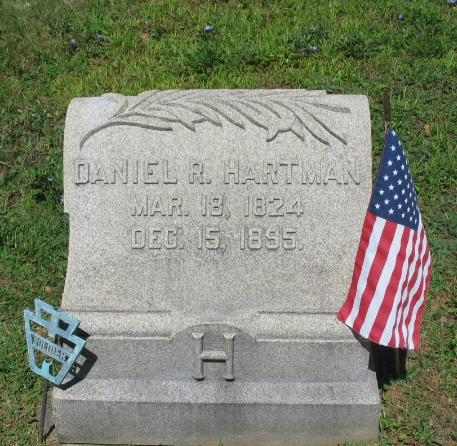
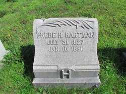
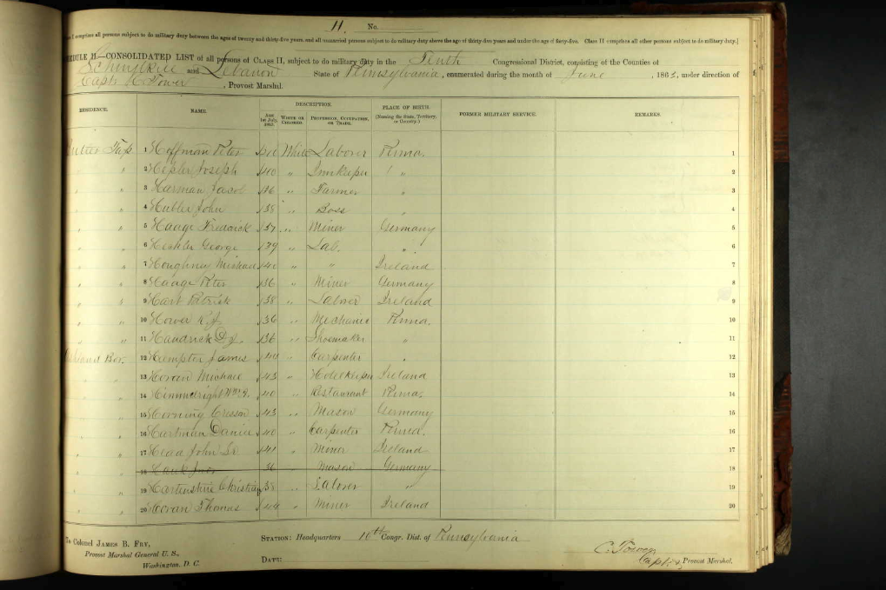
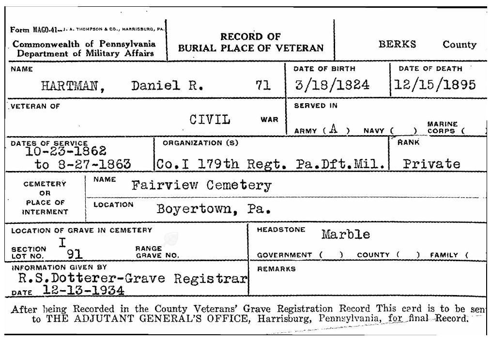

Daniel and Phoebe HARTMAN
GREAT-GRANDPARENTS of Titus HARTMAN (PxP)
married about 1850
Daniel R. HARTMAN
born 18 Mar 1824
died 15 Dec 1895
Phoebe H. HAFER
born 31 Jul 1827
died 10 Jan 1891
Children of Daniel HARTMAN and Phoebe HAFER
Deborah H. HARTMAN
born 31 Dec 1852
died 21 Feb 1872
Franklin H. HARTMAN
born 01 May 1854
died 23 Aug 1926
George H. HARTMAN
born 25 Jun 1855
died 15 Dec 1917
Ellen H. HARTMAN
born 19 Aug 1856
died 21 Jul 1932
Elizabeth H. HARTMAN
born 21 Dec 1857
died 11 Jul 1926
Amanda H. HARTMAN
born 31 Oct 1859
died 07 Jul 1934
Daniel H. HARTMAN
born 28 Dec 1861
died 16 Feb 1939
William Hafer HARTMAN
born 16 Feb 1865
died 01 Jun 1940
[gray boxes above indicate that the person is buried at Fairview Cemetery in Boyertown, PA]
Daniel and Phoebe are buried together at Fairview Cemetery in Boyertown, PA.



